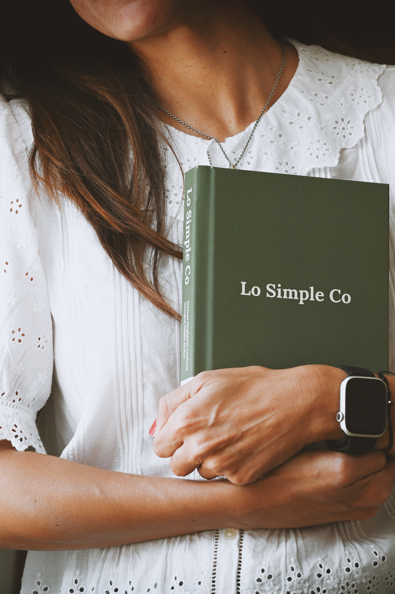
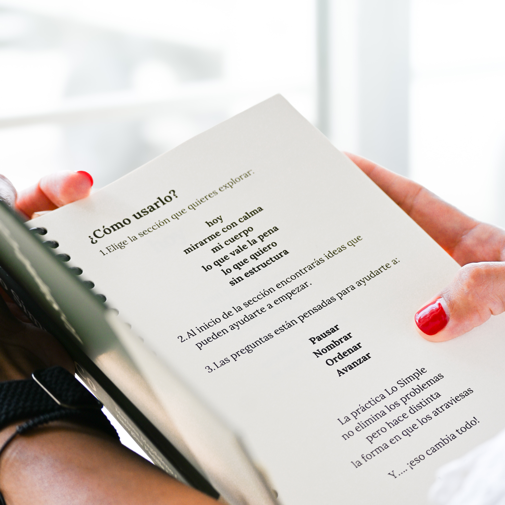

Pausar
Bajar el ruido antes de intentar entenderlo todo.

Journal guiado
Hay días en los que no necesitamos respuestas. Necesitamos un lugar donde bajar el ruido y escucharnos con calma.
Del ruido a la pausa
Para quien piensa demasiado, siente mucho o está atravesando un cambio. Para quien quiere empezar a escribir y necesita una guía amable para entrar en la hoja.
La pausa
Abrir el journal es hacer una pausa en medio del ruido cotidiano: descargar pensamientos, reconocer emociones y mirar lo que pasa con más claridad.

Método Lo Simple
Bajar el ruido antes de intentar entenderlo todo.
Ponerle nombre a lo que se siente y hacerlo más habitable.
Mirar la situación con más claridad, sin saturarse.
Elegir una acción pequeña, realista y posible.

Un objeto para habitar

Qué encontrarás dentro

Lo más simple
Lo que cambia
Descargar pensamientos.
Reconocer emociones.
Mirar con más claridad.
Avanzar con pequeños pasos.
Cómo se usa
En una etapa difícil, cuando necesitas mirar con calma lo que pesa.
En un momento de confusión, cuando quieres poner en orden lo que traes dentro.
Al cerrar el día, o cuando simplemente quieres escucharte con más calma.
La historia
Lo Simple nació como un journal pensado para adolescentes, desde la mirada de dos madres que han visto de cerca lo que viven los jóvenes: presión, dudas, emociones intensas, cambios y muchas cosas que a veces cuesta decir.
Con el tiempo, el proyecto creció. Lo que empezó como una herramienta para adolescentes se abrió también a otras personas, porque todos necesitamos un lugar para escribir lo que pesa, mirar con calma y avanzar mejor.

Desde la marca
"La emoción principal es esa sensación de poder respirar un poco más profundo después de escribir." Calma
"La diferencia está en su tono: cercano, honesto, sensible y diseñado para acompañar sin saturar." Cercanía
"La idea es que el journal sea el punto de partida de una experiencia más amplia." Continuidad
Preguntas
No. Está pensado para quienes quieren empezar a escribir y necesitan una guía amable para entrar en la hoja.
No. Nació como un espacio para adolescentes y creció hacia cualquier persona que quiere escucharse con más calma.
Se puede usar de forma flexible: en una etapa difícil, al cerrar el día o cuando quieras escucharte con más calma.